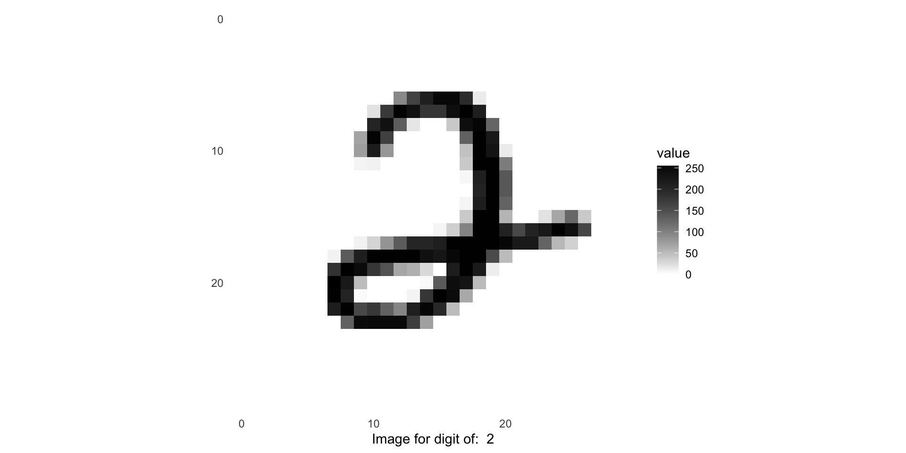
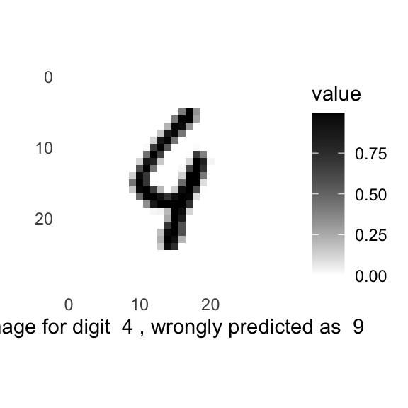

Implementing CNNs with
keras/tensorflow
in R
Behavioral Data Science in R II
Unit 5
Module 12
tensorflow and keras
tensorflowis an open-source machine-learning librarykerasis a high-level application programming interface (API)- Can run on top of
tensorflow(or other ML libraries, e.g. Theano) - Makes coding with
tensorflowmore user friendly
- Can run on top of
Classifying the MNIST data

MNIST is included with keras
library(tidymodels)
library(tidyverse)
# load tensorflow and keras
library(tensorflow)
library(keras)
mnist <- dataset_mnist()
# Load the mnist train/test sets
mnist <- dataset_mnist()
train_images <- mnist$train$x
train_labels <- mnist$train$y
test_images <- mnist$test$x
test_labels <- mnist$test$y
dim(train_images)[1] 60000 28 28
Pre-processing
If your images are not all the same size, pre-processing will also involve resizing
Constructing a CNN
# define the model structure
cnn_model <- keras_model_sequential() %>%
layer_conv_2d(filters = 32, kernel_size = c(3,3), activation = 'relu', input_shape = input_shape) %>%
layer_max_pooling_2d(pool_size = c(2, 2)) %>%
layer_conv_2d(filters = 64, kernel_size = c(3,3), activation = 'relu') %>%
layer_max_pooling_2d(pool_size = c(2, 2)) %>%
layer_dropout(rate = 0.25) %>%
layer_flatten() %>%
layer_dense(units = 128, activation = 'relu') %>%
layer_dropout(rate = 0.5) %>%
layer_dense(units = num_classes, activation = 'softmax') Compile the model
Fit the model
cnn_history <- cnn_model %>% fit(
train_images, train_labels,
batch_size = batch_size,
epochs = epochs,
validation_split = 0.2
)Epoch 1/10
375/375 - 5s - loss: 0.3636 - accuracy: 0.8869 - val_loss: 0.0770 - val_accuracy: 0.9770 - 5s/epoch - 14ms/step
Epoch 2/10
375/375 - 5s - loss: 0.1166 - accuracy: 0.9652 - val_loss: 0.0582 - val_accuracy: 0.9832 - 5s/epoch - 13ms/step
Epoch 3/10
375/375 - 5s - loss: 0.0869 - accuracy: 0.9737 - val_loss: 0.0461 - val_accuracy: 0.9877 - 5s/epoch - 14ms/step
Epoch 4/10
375/375 - 5s - loss: 0.0721 - accuracy: 0.9787 - val_loss: 0.0405 - val_accuracy: 0.9895 - 5s/epoch - 14ms/step
Epoch 5/10
375/375 - 6s - loss: 0.0609 - accuracy: 0.9816 - val_loss: 0.0420 - val_accuracy: 0.9880 - 6s/epoch - 15ms/step
Epoch 6/10
375/375 - 6s - loss: 0.0533 - accuracy: 0.9842 - val_loss: 0.0392 - val_accuracy: 0.9884 - 6s/epoch - 15ms/step
Epoch 7/10
375/375 - 6s - loss: 0.0495 - accuracy: 0.9846 - val_loss: 0.0356 - val_accuracy: 0.9902 - 6s/epoch - 15ms/step
Epoch 8/10
375/375 - 6s - loss: 0.0440 - accuracy: 0.9860 - val_loss: 0.0343 - val_accuracy: 0.9903 - 6s/epoch - 16ms/step
Epoch 9/10
375/375 - 6s - loss: 0.0428 - accuracy: 0.9870 - val_loss: 0.0340 - val_accuracy: 0.9904 - 6s/epoch - 15ms/step
Epoch 10/10
375/375 - 6s - loss: 0.0376 - accuracy: 0.9880 - val_loss: 0.0313 - val_accuracy: 0.9914 - 6s/epoch - 15ms/stepEvaluate the model
313/313 - 1s - loss: 0.0222 - accuracy: 0.9920 - 608ms/epoch - 2ms/step loss accuracy
0.0221637 0.9920000 # get model predictions
cnn_preds <- cnn_model %>%
predict(test_images) %>%
k_argmax() %>%
as.integer()313/313 - 1s - 648ms/epoch - 2ms/step[1] 7 2 1 0 4 1# plot a misclassified image
index_image = 1 ## change this index to see different image.
image <- as.data.frame(missed_images[index_image,,])
colnames(image) <- seq_len(ncol(image))
image$y <- seq_len(nrow(image))
image <- gather(image, "x", "value", -y)
image$x <- as.integer(image$x)
ggplot(image, aes(x = x, y = y, fill = value)) +
geom_tile() +
scale_fill_gradient(low = "white", high = "black", na.value = NA) +
scale_y_reverse() +
theme_minimal() +
theme(panel.grid = element_blank()) +
theme(aspect.ratio = 1) +
xlab(paste('Image for digit ', missed_digits[index_image], ', wrongly predicted as ', missed_preds[index_image])) +
ylab("")
Using a pre-trained model
Transfer-learning & Fine-tuning
“Transfer-learning” refers to taking a model trained on one dataset/problem, and applying it to a similar dataset/problem
“Fine-tuning” refers to re-training the existing model on some new data, with a very low learning rate
- The typical transfer-learning workflow:
- Instantiate a base model and load pre-trained weights into it.
- Freeze all layers in the base model by setting
trainable = FALSE. - Create a new model on top of the output of one (or several) layers from the base model.
- Train your new model on your new dataset.
- Once the new model has converged, unfreeze the base model and fine-tune the whole thing
Using a pre-trained model
Load & pre-process new data
Using a pre-trained model
Instantiate a model with pre-trained weights
Instantiate the base model
Freeze the base model
Create a new model on top
inputs <- layer_input(c(32, 32, 3))
outputs <- inputs %>%
# cifar10 images are 32x32x3,
# so we can include this to resize them to 128x128x3
layer_resizing(
height=128,
width=128,
crop_to_aspect_ratio = T
) %>%
# We make sure that the base_model is running in inference mode here,
# by passing `training=FALSE`. This is important for fine-tuning
base_model(training=FALSE) %>%
# Convert features of shape `base_model$output_shape[-1]` to vectors
layer_global_average_pooling_2d() %>%
# A Dense classifier with a 10 output units, because CIFAR10 has 10 classes
layer_dense(units = 10, activation = 'softmax')
model <- keras_model(inputs, outputs)Using a pre-trained model
Train the model on new data
model %>%
compile(
loss = loss_categorical_crossentropy,
optimizer = optimizer_adam(),
metrics = c('accuracy'))
model %>%
fit(
as_tensor(train_images), train_labels,
batch_size = 128,
epochs = 10,
validation_split = 0.2)Epoch 1/10
63/63 - 14s - loss: 1.4687 - accuracy: 0.5005 - val_loss: 0.9794 - val_accuracy: 0.6600 - 14s/epoch - 220ms/step
Epoch 2/10
63/63 - 12s - loss: 0.8686 - accuracy: 0.7081 - val_loss: 0.8247 - val_accuracy: 0.7155 - 12s/epoch - 188ms/step
Epoch 3/10
63/63 - 12s - loss: 0.7568 - accuracy: 0.7452 - val_loss: 0.7580 - val_accuracy: 0.7400 - 12s/epoch - 197ms/step
Epoch 4/10
63/63 - 13s - loss: 0.6876 - accuracy: 0.7722 - val_loss: 0.7311 - val_accuracy: 0.7415 - 13s/epoch - 202ms/step
Epoch 5/10
63/63 - 12s - loss: 0.6440 - accuracy: 0.7845 - val_loss: 0.7051 - val_accuracy: 0.7555 - 12s/epoch - 197ms/step
Epoch 6/10
63/63 - 12s - loss: 0.6063 - accuracy: 0.8008 - val_loss: 0.6991 - val_accuracy: 0.7555 - 12s/epoch - 193ms/step
Epoch 7/10
63/63 - 12s - loss: 0.5750 - accuracy: 0.8083 - val_loss: 0.6822 - val_accuracy: 0.7700 - 12s/epoch - 184ms/step
Epoch 8/10
63/63 - 12s - loss: 0.5507 - accuracy: 0.8149 - val_loss: 0.6829 - val_accuracy: 0.7665 - 12s/epoch - 186ms/step
Epoch 9/10
63/63 - 12s - loss: 0.5276 - accuracy: 0.8240 - val_loss: 0.6864 - val_accuracy: 0.7610 - 12s/epoch - 187ms/step
Epoch 10/10
63/63 - 12s - loss: 0.5126 - accuracy: 0.8344 - val_loss: 0.6732 - val_accuracy: 0.7635 - 12s/epoch - 197ms/stepUsing a pre-trained model
Fine-tuning
# Unfreeze the base model
base_model$trainable <- TRUE
# It's important to recompile your model after you make any changes
# to the `trainable` attribute of any inner layer, so that your changes
# are taken into account
model %>%
compile(
loss = loss_categorical_crossentropy,
optimizer = optimizer_adam(1e-5),
metrics = c('accuracy'))
# Train end-to-end. Be careful to stop before you overfit!
model %>%
fit(
as_tensor(train_images), train_labels,
epochs = 1,
validation_split = 0.2)250/250 - 51s - loss: 0.4515 - accuracy: 0.8446 - val_loss: 0.5443 - val_accuracy: 0.8190 - 51s/epoch - 203ms/step